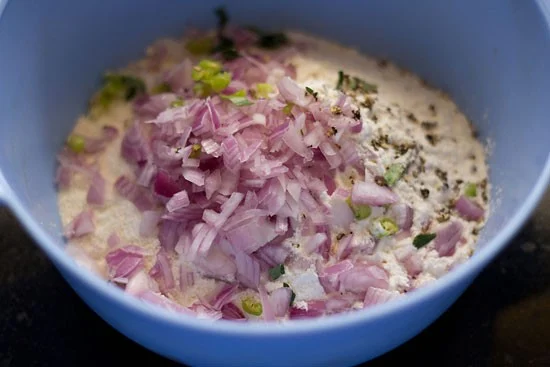
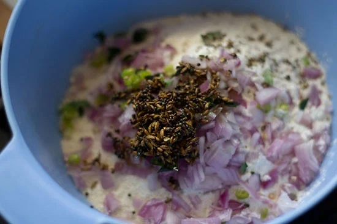
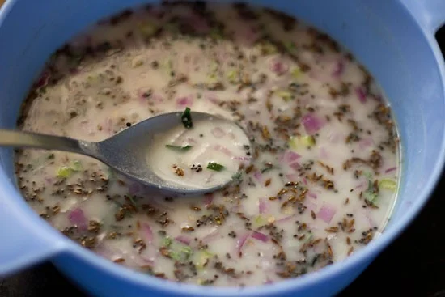
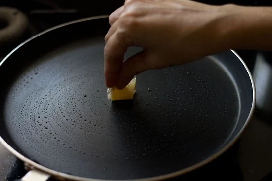
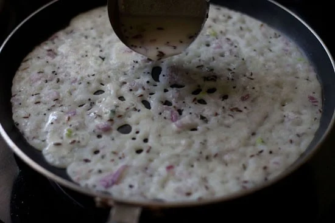
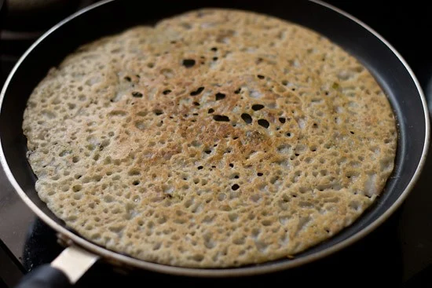
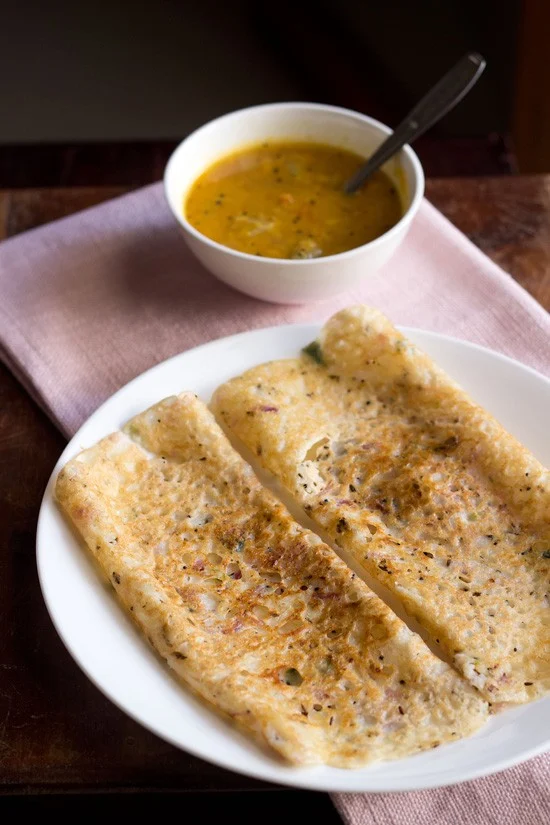

Onion Dosa (Hotel Style Recipe)
How to make Onion Dosa
Make Batter
1. In a mixing bowl, mix the following ingredients with spoon:
*½ cup fine textured un-roasted rava or suji (semolina flour or cream of wheat)
*½ cup rice flour
*2 tablespoons all-purpose flour or whole wheat flour
*½ or 1 teaspoon finely chopped green chillies or 1 green chilli
*½ cup finely chopped onions or about 1 medium-sized onion
*1 teaspoon finely chopped ginger or 1 inch, optional
*9 to 10 black peppercorns, crushed
*1 tablespoon chopped coriander leaves, optional
2. Heat 1 teaspoon oil in a small frying pan. Crackle ½ teaspoon mustard seeds first on low heat.
Then, add 1 teaspoon cumin seeds and 5 to 6 chopped curry leaves. Sauté for a few seconds or till the cumin seeds brown and splutter.
3. Add this tempering together with the oil to the other ingredients in the bowl. Also, add salt as required.
4. Pour water or buttermilk as required and make a thin batter without any lumps. Rest the batter for 15 to 20 minutes.
The batter should not be thick or of medium consistency. I added about 2.25 cups water to the batter. If the batter becomes too thin, then add some rice flour to slightly thicken it.
Make Onion Dosa
5. Heat a cast iron skillet, tawa or a non-stick pan. Using a small piece of cotton fabric, paper napkin or half of an onion which has been dipped in oil, grease the pan all over.
6. With a ladle, pour the prepared batter. First, start pouring the batter from the edges. Keep the heat to medium.
7. Then, move pouring the batter towards the center. If there are big gaps, then fill them lightly with the batter.
8. Drizzle ½ teaspoon oil on top. This dosa takes a little longer time to cook than the regular Dosa. The pan has to be really hot before you pour the batter.
9. Let the base becomes golden or crisp. Flip and cook the other side. Usually, I cook both sides. But you can just cook the base and when the top is also cooked, fold the dosa and serve immediately. Prepare all the dosas this way in batches.
10. Serve the hotel style Onion Dosa hot or warm with coconut chutney or vegetable sambar for a comforting breakfast, brunch or lunch.
